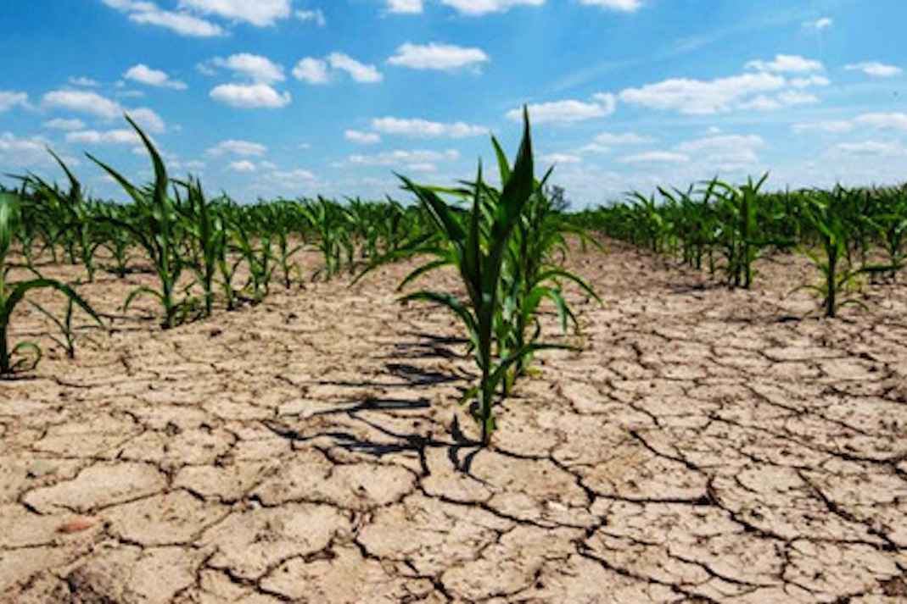
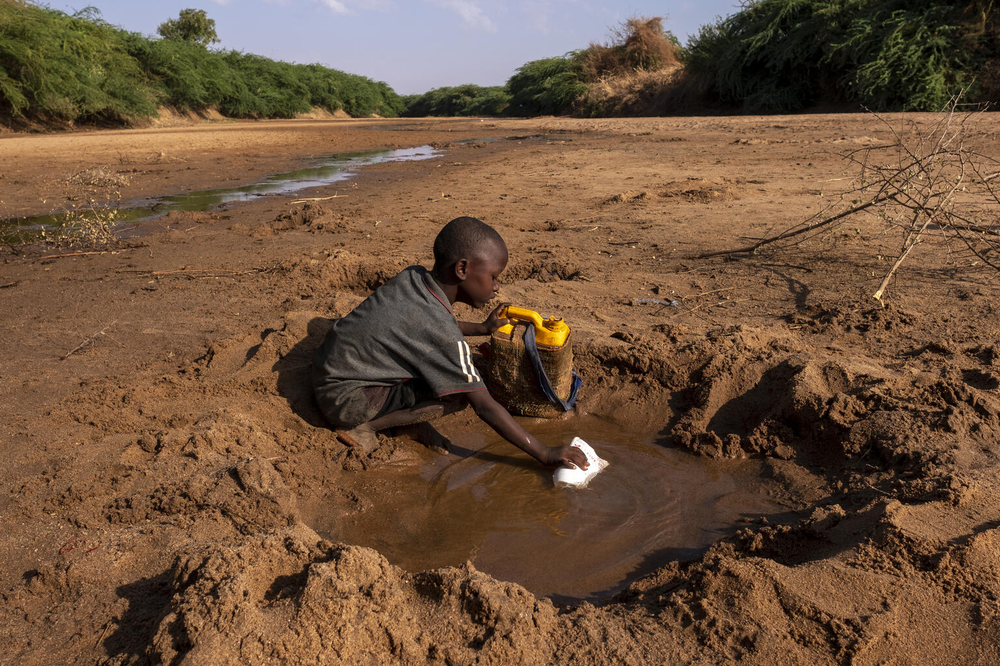
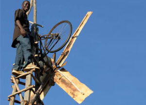
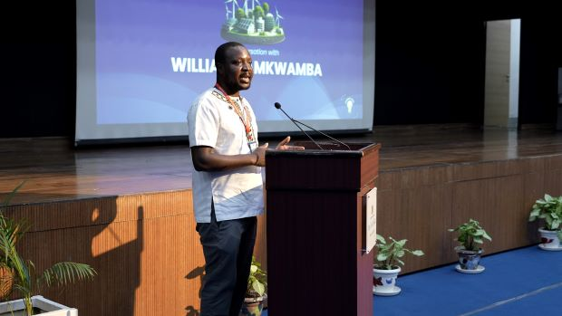

Family Background

William Kamkwamba was born on August 5th, 1987, in Dowa, Malawi, to Trywell and Agnes Kamkwamba.
He is the oldest of seven children. His family relied on subsistence by agriculture in addition,
they used to live in a small village with limited access to electricity, clean water and education.
The Situation

In 2001, the place where he used to live was hit by a severe drought, which led to a famine
that affected all the town. William's family was forced to drop out of school at the age of 14
to help support his family. The village was plagued by poverty, hunger, and lack of access to basic
necessities like water and electricity.
The Problem

The drought had dried up the villages water sources making it difficult for his family and neighbors
to access clean water. The few electricity made it hard for the village to irrigate their crops leading
to food shortages and economics hardship.
The Solution

William discovered a book called "Using Energy" in his village's library which inspired to build a wind
using scrap materials. Several months experimenting and testing were spent by him to eventually building a
functional windmill generated electricity and pumped water for his family. The windmill was a huge
success and williams neighbors began to ask for his help in building their own windmills.
Inspiration to Future Generations

(Waiting for text...) Here we will add the conclusion and legacy, mentioning his TED talks and education.